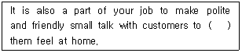
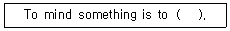
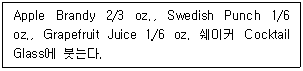
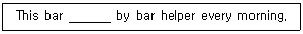
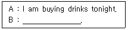
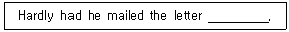

조주기능사 (2001-10-14 기출문제)
1과목: 주류학개론
1. 다음 음료 중 기호음료는?
- Tea
- Juice
- Milk
- Cola
(정답률: 91%)

2. 스프(soup)의 대용으로 적합하고 영양분이 충분한 칵테일은?
- Bosom Caresser
- Albertine
- Sherry
- Manhattan
(정답률: 50%)
3. 다음 중 버번위스키(Bourbon Whisky)는?
- Ballantine
- I.W.Harper
- Lord Calvert
- Old Bushmill's Whisky
(정답률: 60%)
4. 브랜디(Brandy)중에서 V.S.O.P의 약자를 바르게 나타낸 것은?
- Very Superior Old
- Very Superior Old Pale
- Very Superior Old Napoleon
- Very Special Old Napoleon
(정답률: 알수없음)
5. 위스키(Whisky)를 만드는 과정이 올바른 순서는?
- Aging -Fermentation -Distillation -Mashing
- Mashing -Fermentation -Distillation -Aging
- Mashing -Distillation -Fermentation -Aging
- Aging -Distillation -Fermentation -Mashing
(정답률: 알수없음)
6. 1510년 불란서 Fecamp 사원에서 성직자가 만든 술로서 D.O.M 이라고도 불리워지며 주정도가 43도인 혼성주는?
- Chartreause
- Benedictine
- Drambuie
- Cointreau
(정답률: 알수없음)
7. 럼 주(Rum)의 주원료는 다음 중 어느 것인가?
- 대맥(Rye)과 보리(Barley)
- 사탕수수(sugar cane)와 당밀(molasses)
- 꿀(Honey)
- 쌀(Rice)과 옥수수(Corn)
(정답률: 알수없음)
8. 조주시 사용되는 시럽(Syrup)이 아닌 것은?
- Plain syrup
- Grenadine syrup
- Raspberry syrup
- Ginger syrup
(정답률: 75%)
9. 다음 중 꿀(Honey)을 사용하는 칵테일은?
- Zoom
- Honeymoon
- Golden cadillac
- Harmony
(정답률: 0%)
10. 독일에서의 술의 알코올 함유도는 어떻게 표시하고 있는가?
- 술 100g 중 순 에틸알코올이 몇 %가 함유되고 있는가의 표시
- 온도 60 ℉의 물 0에 에틸알코올 200을 프루프로 계산한다.
- 1프루프의 0.5도
- 물 0에 순 에틸알코올 175로 표시
(정답률: 80%)
11. 일반적으로 가장 많이 사용하는 Cocktail Glass의 용량은 몇㎖ 인가?
- 30㎖
- 60㎖
- 90㎖
- 120㎖
(정답률: 알수없음)
12. 육류와 함께 마실 수 있는 것 중 가장 알맞은 것은?
- 백포도주
- 적포도주
- 로제 와인
- 포트 와인
(정답률: 알수없음)
13. 브랜디를 설명한 것 중 틀리는 것은?
- 포도 또는 과실을 발효하여 증류한 술이다.
- 불어로 Eau-de-vie라고 한다.
- 프랑스의 대표적인 Brandy 생산지는 브랜디 지방이다.
- 프랑스는 질이나 양에 있어서 세계 제일의 브랜디 생산국이다.
(정답률: 알수없음)
14. 숙성을 거쳐서 완성되는 술로 알맞은 것은?
- Tequila
- Grappe
- Gin
- Brandy
(정답률: 60%)
15. 주로 추운 계절에 추위를 녹이기 위하여 외출이나 사냥을 하고 돌아와 따뜻하게 마시는 칵테일 중 틀린 것은?
- Irish Coffee
- Tropical Cocktail
- Rum Grog
- Gluhwein
(정답률: 알수없음)
16. 칵테일 만드는 3가지 기본 방법이 아닌 것은?
- Pouring
- Shaking
- Blending
- Stirring
(정답률: 77%)
17. 술의 저장법으로 맞는 것은?
- 따뜻하고 햇볕이 잘 드는 곳
- 습기가 많고 진동이 많은 곳
- 서늘하고 온도 변화가 적은 곳
- 따뜻하고 온도 변화가 많은 곳
(정답률: 100%)
18. Cocktail Recipe 계량 중 1 Dash는 Drop으로 얼마인가?
- 35-40 Drop
- 15-20 Drop
- 25-30 Drop
- 5-10 Drop
(정답률: 54%)
19. 음료(Beverage)를 구분하는 방법으로 올바른 것은?
- 알코올성과 비알코올성
- 양조주와 증류주
- 기호음료와 청량음료
- 발효주와 혼성주
(정답률: 알수없음)
20. 술에 술을 섞거나 술에 청량음료 또는 과즙음료, 기타 부재료를 이용하여 혼합시킨(mixed drink)것은?
- 칵테일
- 하드 드링크
- 소프트 드링크
- 혼성주
(정답률: 60%)
21. 칵테일 조주방법에서 플로팅(Floating)으로 적합한 설명은?
- 재료의 비중을 이용하여 띄우는 것이다.
- 칵테일 글라스 가장자리에 설탕을 묻히는 방법이다.
- 증류주에 불을 붙이는 방법이다.
- 얼음을 갈아 칵테일을 차갑게 만드는 것이다.
(정답률: 알수없음)
22. 이탈리아 밀라노 지방에서 생산되는 것으로 오렌지와 바닐라 향이 강하며 독특하고 길쭉한 병에 담긴 리큐르는?
- 갈리아노(Galliano)
- 퀴멜(Kummel)
- 깔루아(Kahlua)
- 드람부이(Drambuie)
(정답률: 40%)
23. 아름다운 장식은 칵테일에서 매우 중요하므로 장식은 색이나 맛에서 음료와 맞아야 한다. 다음 중 연결이 올바르지 못한 것은?
- 체리 -감미타입 칵테일
- 올리브 -쌉살한 칵테일
- 오렌지 -오렌지쥬스를 사용한 롱 드링크
- 셀러리 -달콤한 칵테일
(정답률: 77%)
24. 글라스 가장자리를 소금으로 프로스팅(Frosting)하는 기법의 칵테일은?
- 마가리타(Magarita)
- 키스오브 파이어(Kiss of Fire)
- 아이리쉬 커피(Irish Coffee)
- 다이쿼리(Daiquiri)
(정답률: 알수없음)
25. 바(Bar)에서 사용되는 글라스를 크게 3가지로 분류한 것으로 올바른 것은?
- 텀블러,footed 글라스, 스템드 글라스
- 세리 글라스, 리큐어 글라스, 와인 글라스
- 칵테일 글라스, 코디알 글라스, 올드펫션 글라스
- 하이볼 글라스, 온드락 글라스, 칵테일 글라스
(정답률: 알수없음)
26. 보드카가 기주로 쓰이지 않는 칵테일은?
- 맨해탄
- 스크루드라이브
- 키스 오브 파이어
- 치치
(정답률: 알수없음)
27. 감자를 주원료로 해서 만드는 북유럽의 스칸디나비아 국가의 술로 유명한 것은?
- 아쿠아비트(Akuavit)
- 칼바도스(Cavados)
- 스타인 헤거(Steinhager)
- 그라파(Grappa)
(정답률: 알수없음)
28. 경우에 따라 고객에게 제공할 때 미리 병마개를 따놓는 알콜음료가 있다. 다음 중 적당한 것은?
- 샴페인
- 적포도주
- 맥주
- 위스키
(정답률: 알수없음)
29. 탄산음료나 샴페인을 사용하고 남은 일부를 보관시 사용되는 기구는?
- 코스터
- 스토퍼
- 폴러
- 코르크
(정답률: 73%)
30. 롱 드링크(Long Drink)에 대한 설명 중 적당치 않는 것은?
- 통상 10 oz 이상 텀블러 글라스로 제공한다.
- 하이볼이라고도 한다.
- 한 종류 이상의 술에 청량음료를 섞는 것이 보통이다.
- 무알콜 음료의 총칭이다.
(정답률: 100%)
2과목: 주장관리개론
31. 칵테일 조주시 각종 주류와 부재료를 재는 표준용량 계량기는?
- Hand Shaker
- Mixing Glass
- Squeezer
- Jigger
(정답률: 100%)
32. 다음 중 조주원의 행동 규범에 어긋나는 것은?
- 항상 깨끗하고, 명랑하고 사교적이어야 한다.
- 손님과 대화할 때만은 담배를 피워도 무방하다.
- 글라스를 취급할 때 글라스의 스템(Stem)이나 밑부분을 잡는다.
- 화장실 사용 후에는 반드시 손을 씻는다.
(정답률: 92%)
33. 다음 중 업장 주류 보급(issue)원칙에 합당한 것은?
- 부패성이 없기 때문에 가능한 한 많이 보급 수령
- 매일 수령하는 일일 보급(daily issue)의 원칙
- 시간 절약을 위해 주별 보급(weekly issue)의 원칙
- 월말 인벤토리 직후 월별 보급(monthly issue)의 원칙
(정답률: 20%)
34. 주장 요원의 직무가 아닌 것은?
- 영업장 안의 각종 주류재고량 파악
- 각종 주문전표 확인
- 영업 시간 전 준비상태 확인을 위한 각종 부재료 파악
- 음식물 제공여부 점검
(정답률: 73%)
35. 바 카운터의 요건 중 틀린 것은?
- 카운터의 높이는 1-1.5m가 적당하며 너무 높아서는 안된다.
- 카운터는 넓으면 넓을수록 좋다.
- 작업대(Working board)는 카운터 뒤에 수평으로 부착시켜야 한다.
- 카운터 표면은 잘 닦여지는 재료로 되어 있어야 한다.
(정답률: 80%)
36. 주종상품이 식료(Food)위주로서 시설비와 인건비에 비하여 순수익이 높은 주장은?
- Lobby Lounge
- Cocktail Bar
- Restaurant Bar
- Night Club
(정답률: 72%)
37. 바틀멤버(Bottle member)제조의 장점이 아닌 것은?
- 고정객을 확보할 수 있어 고정수입이 확보된다.
- 선불이기 때문에 회수가 정확하여 자금운영이 원활 하다.
- 음료의 판매회전을 촉진한다.
- 음료청구 및 구매행위를 용이하게 해 준다.
(정답률: 알수없음)
38. 음료저장 방법 중 잘못 설명된 것은?
- 포도주병은 눕혀서 코르크 마개가 항상 젖어 있도록 저장한다.
- 살균된 맥주는 출고 후 약 3개월 정도는 실내온도에서 저장할 수 있다.
- 백포도주는 3개월 전에 냉장고에 저장하여 충분히 냉각시킨 후 제공한다.
- 양조주는 선입선출법에 의해 저장, 관리한다.
(정답률: 19%)
39. 다음 중 맥주의 냉각 저장에 가장 적합한 기물은?
- 딮 프리저(deep freezer)
- 바-싱크(bar sink)
- 냉장고(refrigerator)
- 아이스 큐브 빈(ice cube bin)
(정답률: 60%)
40. 생맥주(Draft Beer)취급의 필수적인 요건이 아닌 것은?
- 냉장시설의 적정온도 유지
- 술통 속 맥주의 정확한 압력
- 쾌적한 실내장식과 판매카운터
- 선입선출에 의한 재고순환
(정답률: 100%)
41. 칵테일을 만들 때 알맞지 않는 사항은?
- 온더락스(On the rocks)의 경우 술을 먼저 붓고 얼음은 다음에 넣는다.
- 올리브(Olive)는 찬물에 헹구어 짠맛을 엷게 해서 사용한다.
- 체리(Cherry)는 씻지 않고 그냥 사용한다.
- 찬술은 보통 찬 글라스를, 뜨거운 술은 뜨거운 글라스를 사용한다.
(정답률: 55%)
42. 백포도주의 가장 알맞는 냉각(보관)온도는 몇 도인가?
- 12 –18 ℃
- 10 -16 ℃
- 8 –19 ℃
- 6 -12 ℃
(정답률: 80%)
43. Par Stock은 무엇을 의미 하는가?
- 식음료 재료저장
- 식음료 예비저장
- 영업에 필요한 적정재고량
- 업무 직후 남아 저장하여야 할 상품
(정답률: 89%)
44. 표준 양목표 작성의 목적 중 틀린 것은?
- 조주원가 산정의 용이
- 판매가격 결정에 기여
- 품질 관리에 기여
- 인건비 절감에 기여
(정답률: 70%)
45. 좋은 맛을 유지하기 위한 와인 적정온도 설명 중 틀린 것은?
- 레드와인은 화이트와인보다 차갑게 마신다.
- 자기가 맛있다고 느끼는 온도로 마시는 것이 가장 좋다.
- 화이트 와인은 10 ~12 ℃로 조금 차갑게 해서 마시는 것이 좋다.
- 스위트 와인은 좀더 차갑게 하는 것이 좋다.
(정답률: 알수없음)
46. 칵테일 조주시 계란의 선택과 보관 방법 중 틀린 사항은?
- 큰 것을 피하고 개당 50g 이내의 것이 적당하다.
- 칵테일 제조시 계란 선택에 각별히 주의해야 한다.
- 껍질은 단단하고 신선한 것으로 한다.
- 계란을 사용할 때는 조제되는 재료들 속에 직접 넣는다.
(정답률: 알수없음)
47. 와인의 빈테이지(Vintage)이란?
- 숙성기간
- 발효기간
- 포도의 수확년도
- 효모의 배합
(정답률: 70%)
48. 마신 알콜량(cc)을 나타내는 공식은?
- 알콜량(cc)×0.8
- 술의 농도(%)×마시는 양(cc)÷100
- 술의 농도(%)-마시는 양(cc)
- 술의 농도(%)÷ 마시는 양(cc)
(정답률: 알수없음)
49. 주장 관리에 있어서 바람직하지 못한 것은?
- 연령, 소득 등에 따라 목표고객을 분석한다.
- 가장 바쁜 시간의 영업량을 미리 예측해 본다.
- 동일 상권에 있어 경쟁업체를 수시로 파악한다.
- 업장의 형태와 크기는 가능한 최대로 확보한다.
(정답률: 79%)
50. 다음 칵테일 용구 중 설명이 바르지 않은 것은?
- Strainer : 재료를 혼합 반죽하는 기구
- Squeezer : 과즙을 짜는 기구
- Pourer : 술 손실 예방 기구
- Cork Screw : 코르크마개 빼는 기구
(정답률: 알수없음)
3과목: 고객서비스영어
51. 다음 ( )안에 알맞은 단어는?

- doing
- takes
- gives
- make
(정답률: 58%)
52. 혼합주(混合酒)의 영문 명칭은?
- Fermented liquor
- Wine
- Distilled liquor
- Compounded liquor
(정답률: 알수없음)
53. What is Rum made from?
- sugar cane
- grapes
- grains
- peaches
(정답률: 알수없음)
54. 다음 빈칸에 알맞은 단어는?

- benefit from it
- understand it
- study it
- object to it
(정답률: 알수없음)
55. Which is the correct one as a base of Diki-Diki in the following?

- Vodka
- Wine
- Brandy
- Gin
(정답률: 알수없음)
56. "This milk has gone bad"의 뜻은?
- 우유가 상했다.
- 우유가 맛이 없다.
- 우유가 좋지 않다.
- 우유가 오래됐다.
(정답률: 알수없음)
57. What is the helper of a bartender called?
- Steward
- Head bartender
- Waiter
- Bar back
(정답률: 알수없음)
58. 밑줄 친 부분의 가장 알맞은 말은?

- cleans
- is cleaned
- is cleaning
- be cleaned
(정답률: 69%)
59. 밑줄 친 부분의 가장 알맞은 말은?

- What happened?
- What's wrong with you?
- What's the matter with you?
- What's the occasion?
(정답률: 알수없음)
60. 아래 밑줄 친 부분에 들어갈 알맞은 것은?

- then he began to regret writing it
- then he received one
- when he mailed it
- when he began to regret writing it
(정답률: 알수없음)